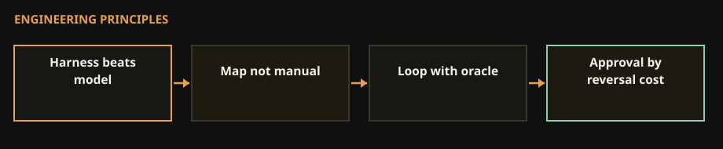
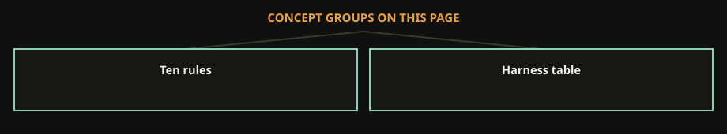

Engineering principles
Ten rules recur across all labs. Each rule names a source cluster on the tool pages.

Harness beats model
Agent equals Model plus Scaffold. On a weak result, fix tools, form and feedback first. Ask: what skill lacks, and how can a rule make that skill clear and firm? Source: OpenAI harness post.
Map, not manual
Instruction files act as tables of contents near 100 to 200 lines. Deep docs sit one link away, with an owner and a freshness check. Anthropic and OpenAI reach this rule on own paths.
Graph, not chat
Work forms a graph: parallel branches in worktrees or sandboxes, dependent stages, one synthesis node. A human runs the graph via alerts and briefs, not node by node chat.
Loop with an oracle
No loop runs with no firm stop rule. Tests, verify scripts, linters, revert rate and eval sets form stop rules an agent cannot edit.
Fresh eyes review
A reviewer holds no shared context with an author. Forms: a second model run, a subagent, a fresh context design reviewer, agent to agent review in Codex.
Lessons rise to the firmest layer that fits
Order: chat note, rule file note, path rule, skill, hook or lint or test. If a doc note fails to stop an error, promote the lesson to code. Source: Poteto team and OpenAI.
Approval scales with reversal cost
Drafts cost near zero. Send, pay, merge, delete and spend acts wait for a human. All four personal agents and both business bot cases use this gate.
Context is the scarce resource
Tokens matter. Human attention matters more. Briefs, exception alerts and output compression all guard attention.
Speed changes process ethics
At agent speed, short life pull requests and cheap fixes can beat heavy gates. That trade holds only with revert and quality data live. OpenAI states this caveat in the harness post.
Context and data form the moat
All users rent the same frontier models. Compound assets differ: a brain folder, eval sets, skills and unique data. Sources: Isenberg, Sanchez and Pocock cases.
Harness model in four parts
| Part | Role | Sample |
|---|---|---|
| Context | RAM for an agent | Rule file map, path rules, memory files |
| Tools | System calls | MCP servers, browser, terminal, test runner |
| Skills | Programs | SKILL.md folders, playbooks, slash commands |
| Evals | Verifiers | Tests, verify scripts, eval sets, revert rate |
Loop form
Trigger -> Execute -> Verify vs oracle -> State log -> Stop at pass or at a set round cap
State log fields per round: cluster, draft version, claim count, gap list. A loop with no state log repeats work and hides drift.

Visual map of this page
Three views of one page: a Mermaid flow for work order, a markmap for concept groups, and a read guide for the flow.
Mermaid source, for offline read
flowchart TD A[Harness] --> B[Graph of work] B --> C[Loop vs oracle] C --> D[Fresh eyes review] D --> E[Lesson to firm layer] E --> A
How to read the flow diagram. Step 1: start at the left box. Step 2: follow each arrow to the next stage. Step 3: at a branch box, read both paths before a choice. Step 4: a loop arrow means work returns for one more pass vs a test.
Markmap: concepts on this page
- Engineering principles
- Ten rules
- Harness, map, graph
- Loop, fresh eyes, firm lessons
- Approval, context, speed, moat
- Harness table
- Context as RAM
- Tools as calls
- Skills as programs
- Evals as verifiers
- Ten rules